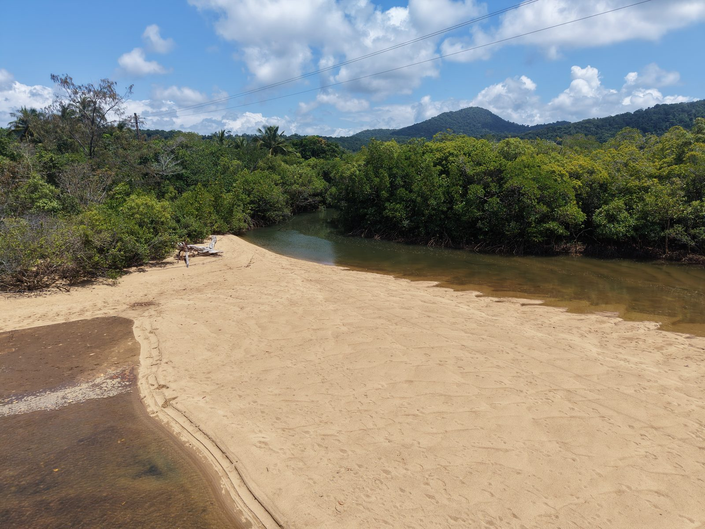

GOONDOI / ENVIRONMENTAL FIELD WORK
Wetlands, weeds & Country
Working with Goondoi Arts Aboriginal Corporation, AI FIRST NATIONS brings drone surveys and practical field experience to Blackfella Creek and surrounding wetlands.
- Our role
- Drone surveys, pond apple mapping and treatment planning.
- What the work supports
- Locating infestations and comparing wetland imagery over time to guide follow-up work.
We acknowledge the Mamu People, Traditional Owners of the Country where this work takes place.
Discuss environmental monitoring ↗